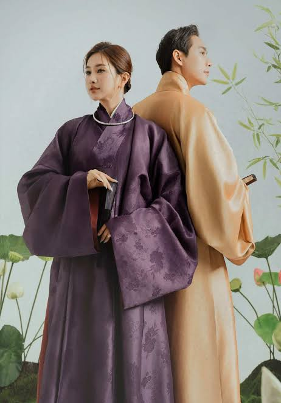
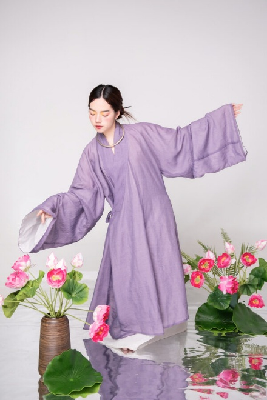

01
Áo dài giao lĩnh – Nguồn gốc sơ khai của áo dài Việt Nam
Dù chưa có nghiên cứu nào xác định chính xác thời điểm xuất hiện của áo dài, nhưng nhiều tài liệu lịch sử cho thấy hình ảnh sớm nhất của áo dài có thể bắt nguồn từ áo giao lĩnh vào thế kỷ 18. Áo giao lĩnh là kiểu trang phục rộng, dài, có cổ chéo, tay rộng, và xẻ hai bên hông, mang nét tương đồng với áo tứ thân sau này.
Dưới thời chúa Nguyễn Phúc Khoát (năm 1744), áo giao lĩnh được cải tiến thành bộ trang phục mới với quần dài bên trong áo lụa, nhằm tạo sự khác biệt giữa người dân Đàng Trong với Đàng Ngoài. Đây có thể xem là hình ảnh sơ khai của áo dài Việt Nam.

